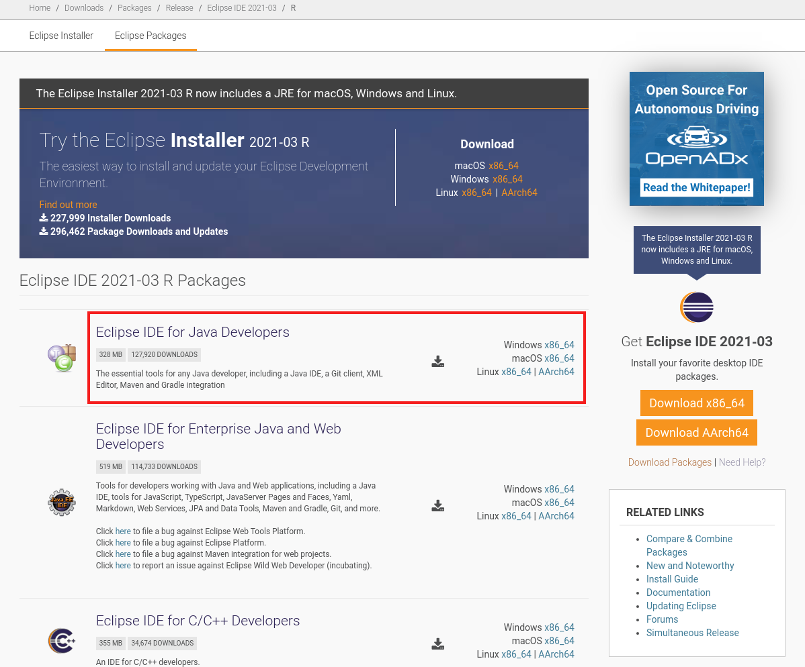
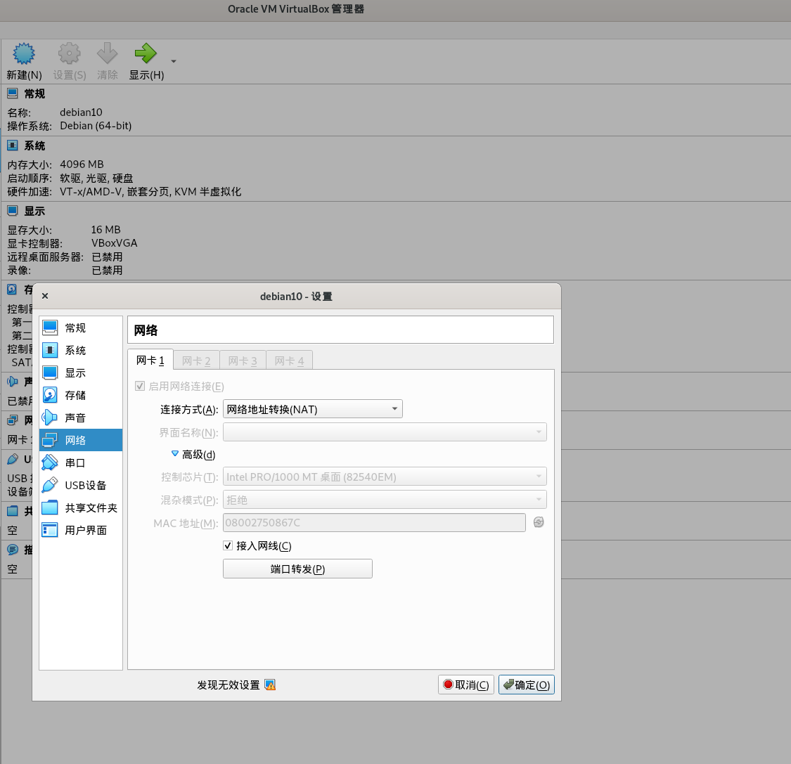

唔该博客
唔该博客，一个前后端分离的博客系统。
项目仓库

https://github.com/dyrnq/mhgoi-blog

https://gitee.com/dyrnq/mhgoi-blog
软件特色
- 多数据库支持,支持mysql、mariadb、postgresql
- 移动端界面适配
- Markdown编辑器
软件架构
目录结构
├── backend
│ ├── api
│ └── pom.xml
├── frontend
│ ├── admin
│ └── web
├── LICENSE
└── README.md
后端技术
| 技术 | 说明 | 官网 |
|---|---|---|
| SpringBoot | MVC框架 | https://spring.io/projects/spring-boot |
| SpringCloud | 微服务框架 | https://spring.io/projects/spring-cloud |
| MyBatis-Plus | ORM框架 | https://mp.baomidou.com |
| Swagger-UI | 文档生成工具 | https://github.com/swagger-api/swagger-ui |
| RabbitMQ | 消息队列 | https://www.rabbitmq.com |
| Redis | 分布式缓存 | https://redis.io |
| JWT | JWT登录支持 | https://github.com/jwtk/jjwt |
| Nginx | web服务器 | http://nginx.org |
| JustAuth | 第三方登录的工具 | https://github.com/justauth/JustAuth |
| hutool | Java工具包类库 | https://github.com/looly/hutool |
| Flexmark-java | Markdown转换Html | https://github.com/vsch/flexmark-java |
| Minio | 对象存储服务 | https://min.io |
| Docker | 容器化部署 | https://www.docker.com |
| Docker Compose | 容器编排 | https://docs.docker.com/compose |
前端技术
环境搭建
| 工具 | 说明 | 官网 |
|---|---|---|
| Debian | buster | https://debian.org |
| VirtualBox | 6.1 | https://www.virtualbox.org |
| Eclipse | 2020-12 (4.18.0) | https://eclipse.org |
| Vscode | 1.52 | https://code.visualstudio.com |
| AdoptOpenJDK | hotspot_8u275b01 | https://github.com/AdoptOpenJDK |
| Node.js | ^=14.15.1 | http://nodejs.org |
| Maven | ^=3.3.0 | http://maven.apache.org |
| MySQL | 5.7 | https://www.mysql.com |
| PostgreSQL | 11 | https://www.postgresql.org |
| RabbitMQ | 3.8.9 | http://www.rabbitmq.com |
| Nginx | 1.18.0 | http://nginx.org |
| Redis | 5.0.10 | https://redis.io |
AdoptOpenJDK
从https://adoptopenjdk.net/下载AdoptOpenJDK。也可以从清华TUNA镜像下载，根据自己的平台选择下载jdk
- https://mirrors.tuna.tsinghua.edu.cn/AdoptOpenJDK/11/jdk/x64/linux/
- https://mirrors.tuna.tsinghua.edu.cn/AdoptOpenJDK/11/jdk/x64/mac/
- https://mirrors.tuna.tsinghua.edu.cn/AdoptOpenJDK/11/jdk/x64/windows/
下载解压缩后,配置好JAVA_HOME和PATH变量，然后执行java -version查看java版本
jim@debian:~$ java -version
openjdk version "11.0.9.1" 2020-11-04
OpenJDK Runtime Environment AdoptOpenJDK (build 11.0.9.1+1)
OpenJDK 64-Bit Server VM AdoptOpenJDK (build 11.0.9.1+1, mixed mode)
maven
下载
从https://mirrors.tuna.tsinghua.edu.cn/apache/maven/maven-3/下载个maven包。
下载解压后设置MAVEN_HOME环境变量和PATH环境变量中追加$MAVEN_HOME/bin
jim@debian:~$ mvn -version
Apache Maven 3.6.3 (cecedd343002696d0abb50b32b541b8a6ba2883f)
Maven home: /usr/local/maven
Java version: 11.0.9.1, vendor: AdoptOpenJDK, runtime: /usr/local/jdk-11.0.9.1_1
Default locale: en_US, platform encoding: UTF-8
OS name: "linux", version: "4.19.0-13-amd64", arch: "amd64", family: "unix"
配置mirror
修改$MAVEN_HOME/conf/settings.xmlmirrors节点中添加如下内容：
<mirror>
<id>huaweicloud</id>
<mirrorOf>*</mirrorOf>
<url>https://mirrors.huaweicloud.com/repository/maven/</url>
</mirror>
打开$MAVEN_HOME/conf/settings.xml中的localRepository配置
<!-- localRepository
| The path to the local repository maven will use to store artifacts.
|
| Default: ${user.home}/.m2/repository
<localRepository>/path/to/local/repo</localRepository>
-->
<localRepository>/usr/local/maven_repo</localRepository>
Eclipse
下载Eclipse
从https://www.eclipse.org/downloads/packages/下载Eclipse IDE for Java Developers

下载lombok
从https://projectlombok.org/download下载lombok.jar
然后执行
java -jar lombok.jar
如果提示Can't find IDE,则需要选择手工选择Eclipse的安装路径(上图的Specify location)，再点击install！
配置maven
这一步是统一命令行(shell)中使用mvn和Eclipse中maven使用相同的设置
VSCode
下载VSCode
Visual Studio Code是一个轻量级但功能强大的源代码编辑器，可在您的桌面上运行，并且可用于Windows，macOS和Linux。
https://code.visualstudio.com/
推荐插件
Beautify、Docker、Vetur
Git
git
# debian ubuntu
apt install git
# centos
yum install git
# mac
# https://git-scm.com/book/zh/v2/%E8%B5%B7%E6%AD%A5-%E5%AE%89%E8%A3%85-Git
GithubDesktop
Github cli(可选)
git入门推荐
- https://wkevin.github.io/GitChat/gitchat.html
- https://backlog.com/git-tutorial/cn/
- https://rogerdudler.github.io/git-guide/index.zh.html
nodejs
下载nodejs
从https://nodejs.org/下载nodejs
下载解压缩后,配置好NODE_HOME和PATH变量，然后执行node --version查看java版本
jim@debian:~$ node --version
v14.15.4
jim@debian:~$ npm --version
6.14.10
设置npm的mirror
npm config set registry https://mirrors.huaweicloud.com/repository/npm/
npm cache clean -f
其他方式安装
- https://sdkman.io/
- https://github.com/nvm-sh/nvm
- https://github.com/mklement0/n-install
- https://mirrors.tuna.tsinghua.edu.cn/nodejs-release/v14.15.4/
Virtualbox
VirtualBox是功能强大的x86和AMD64 / Intel64虚拟化产品，适用于企业和家庭使用。VirtualBox不仅是面向企业客户的功能极为丰富的高性能产品，而且还是根据GNU通用公共许可证（GPL）版本2的条款可作为开源软件免费提供的唯一专业解决方案。
install
https://www.virtualbox.org/
ref
Vagrant
Vagrant可以理解为针对虚拟机的docker，可以方便拉取别人制作好的虚拟机镜像后启动一个虚拟机实例。
通常可以不用自己安装虚拟机，可以像docker pull一样从Vagrant的app仓库拉取制作好的box（镜像），ubuntu和centos都有官方自己制作的镜像。
Vagrant不仅可以操控virtualbox，还可以操控vmware、libvirt、hyperv等其他虚拟化方案。
install
文档 https://www.vagrantup.com/downloads
mac下安装Vagrant可以通过brew安装
brew cask install vagrant
下载vbox镜像
为本地仓库添加box方法有2种，box是vagrant的镜像。
- 第一种方法是先使用curl或者wget等工具下载镜像，再添加。推荐
## .box文件比较大，也可以下载下来，再调用vagrant box add
wget --tries 100 --continue --output-document debian10.box https://app.vagrantup.com/debian/boxes/buster64/versions/10.4.0/providers/virtualbox.box
vagrant box add debian10 ./debian10.box
- 第二种方法可以通过
vagrant box add命令后边+box的http地址。
# debian buster64
vagrant box add debian10 https://app.vagrantup.com/debian/boxes/buster64/versions/10.4.0/providers/virtualbox.box
## centos7
vagrant box add centos7 https://mirrors.ustc.edu.cn/centos-cloud/centos/7/vagrant/x86_64/images/CentOS-7-x86_64-Vagrant-2004_01.VirtualBox.box
## centos8
vagrant box add centos8 https://mirrors.ustc.edu.cn/centos-cloud/centos/8/vagrant/x86_64/images/CentOS-8-Vagrant-8.3.2011-20201204.2.x86_64.vagrant-virtualbox.box
## ubuntu1804
vagrant box add ubuntu1804 https://mirrors.tuna.tsinghua.edu.cn/ubuntu-cloud-images/bionic/current/bionic-server-cloudimg-amd64-vagrant.box
## ubuntu2004
vagrant box add ubuntu2004 https://mirrors.tuna.tsinghua.edu.cn/ubuntu-cloud-images/server/focal/current/focal-server-cloudimg-amd64-vagrant.box
创建Vagrantfile
Vagrantfile是一个虚拟机实例的配置，比如cpu多少核、内存多大啊
mkdir vmworkspace
cd vmworkspace
vi Vagrantfile
# -*- mode: ruby -*-
# vi: set ft=ruby :
Vagrant.configure("2") do |config|
config.vm.box_check_update = false
[11,12].each do |i|
config.vm.define "n#{i}" do |node|
node.vm.provider "virtualbox" do |vb|
vb.customize ["modifyvm", :id, "--natdnshostresolver1", "on"]
vb.customize ["modifyvm", :id, "--ioapic", "on"]
vb.memory = "2048"
vb.cpus = 2
end
node.vm.box = "ubuntu2004"
#node.vm.network :forwarded_port, guest: 22, host: "2#{i}22", host_ip: "0.0.0.0", auto_correct:true
node.vm.provision "shell", inline: <<-SHELL
#########################################################################
echo "root:vagrant" | sudo chpasswd
#########################################################################
swapsize=4000
# does the swap file already exist?
grep -q "swapfile" /etc/fstab
# if not then create it
if [ $? -ne 0 ]; then
echo 'swapfile not found. Adding swapfile.'
fallocate -l ${swapsize}M /swapfile
chmod 600 /swapfile
mkswap /swapfile
swapon /swapfile
echo '/swapfile none swap defaults 0 0' >> /etc/fstab
else
echo 'swapfile found. No changes made.'
fi
#######################################################################
mkdir -p /data
#######################################################################
sed -i "s@http://.*archive.ubuntu.com@http://repo.huaweicloud.com@g" /etc/apt/sources.list && \
sed -i "s@http://.*security.ubuntu.com@http://repo.huaweicloud.com@g" /etc/apt/sources.list && \
DEBIAN_FRONTEND=noninteractive apt-get update && \
DEBIAN_FRONTEND=noninteractive apt-get -y upgrade && \
DEBIAN_FRONTEND=noninteractive apt install -yqq curl
#######################################################################
curl -fsSL https://ghproxy.com/https://raw.githubusercontent.com/dyrnq/install-docker/main/install-docker.sh | bash -s docker --mirror tencent --version 20.10.3 --with-compose --compose-version 1.28.2 --compose-mirror daocloud
#######################################################################
sudo usermod -aG docker vagrant
SHELL
end
end
end
启动
vagrant up n11
vagrant ssh n11
使用Vagrant的好处是可以快速的重新获取一个全新的既定的vm，比如用下边这条语句
vagrant destroy n11 -f && vagrant up n11 && vagrant ssh n11
表示强制销毁n11---->重新建立n11---->ssh登录到n11
ref
vm-nat网络配置
虚拟机端口映射
在使用vm作为开发测试机的时候首先碰到的问题，就是部署在虚拟机里的服务，比如mysql，怎样在host主机访问呢？
首先整理下概念
- Host：宿主机
- Guest: 虚拟机
这里记录下我的NAT方法
打开VirtualBox中的这台虚拟机-->设置-->网络-->高级-->端口转发


每一行是一个端口映射，主机IP固定写0.0.0.0，子系统IP不用写。主机端口写映射到主机的端口，子系统端口写虚拟机要映射出来的端口。
比如要映射虚拟机的22端口到宿主机，这里由于宿主机的22端口被宿主机的sshd占用了，所以这里不能再用22端口映射，所以改成了28222
| 名称 | 协议 | 主机IP | 主机端口 | 子系统IP | 子系统端口 |
|---|---|---|---|---|---|
| Rule1 | TCP | 0.0.0.0 | 28222 | 22 |
这样在宿主机上通过ssh tom@127.0.0.1 -p 28222 这条命令就连到虚拟机的ssh了。
以此类推，其他3306、6379等端口也可以从虚拟机映射到宿主机，如果宿主机已经占用了端口那么就改个未被占用的端口，自行记录对应关系。
docker容器端口映射
以此类推，如果在vm中起docker容器，首先要把容器的端口映射出来。
docker run -d --name mysql57 --restart always -p 3306:3306 mysql:5.7.32
比如这句mysql容器，首先把容器3306端口映射到容器的宿主机(vm)，然后再把vm的3306映射到vm的宿主机。
这样通过两层网络转发，就可以在宿主机直接访问容器的3306数据库了。
安装docker
安装docker主要是为了跑数据库、redis、直接拉起hub.docker.com上的镜像
从系统安装
从二进制安装
- https://docs.docker.com/engine/install/binaries/
- https://download.docker.com/linux/static/stable/x86_64/
开发环境
- 推荐在linux,centos7/8、debian10、ubuntu20.04等linux服务器操作系统上安装docker！
- 不推荐在mac上或windows安装docker-desktop。
- 可以考虑在mac或window上安装一个VirtualBox或VMware来启动一个linux虚拟机，然后在这个linux虚拟机中安装docker。
docker入门推荐
- https://yeasy.gitbooks.io/docker_practice/
- https://github.com/twtrubiks/docker-tutorial
- https://gist.github.com/StevenACoffman/41fee08e8782b411a4a26b9700ad7af5
数据库
数据库使用docker run快速安装，以下命令为示范命令，可以选择其中一个
mysql
mysql-5.7.x
mkdir -p /data/lib/mysql57;
docker run -d --name mysql57 \
--restart always \
--network mynet \
-e MYSQL_ROOT_PASSWORD=666666 \
-v /data/lib/mysql57:/var/lib/mysql \
-p 3306:3306 \
mysql:5.7.32 --character-set-server=utf8mb4 --collation-server=utf8mb4_unicode_ci --default-time-zone=+8:00
mysql-8
mkdir -p /data/lib/mysql8;
docker run -d --name mysql8 \
--restart always \
--network mynet \
-e MYSQL_ROOT_PASSWORD=666666 \
-v /data/lib/mysql8:/var/lib/mysql \
-p 13306:3306 \
mysql:8.0.23 --character-set-server=utf8mb4 --collation-server=utf8mb4_unicode_ci --default-time-zone=+8:00 --innodb-dedicated-server=on
mariadb
mariadb-10.5.x
mkdir -p /data/lib/mariadb10;
docker run -d --name mariadb10 \
--restart always \
--network mynet \
-e MYSQL_ROOT_PASSWORD=666666 \
-v /data/lib/mariadb10:/var/lib/mysql \
-p 3306:3306 \
mariadb:10.5.8
postgresql
postgresql-11.x
mkdir -p /data/lib/postgres11;
docker run -d --name postgres11 \
--restart always \
--network mynet \
-e POSTGRES_PASSWORD=666666 \
-p 5432:5432 \
-v /data/lib/postgres11:/var/lib/postgresql/data postgres:11.10
postgresql-12.x
mkdir -p /data/lib/postgres12;
docker run -d --name postgres12 \
--restart always \
--network mynet \
-e POSTGRES_PASSWORD=666666 \
-p 5432:5432 \
-v /data/lib/postgres12:/var/lib/postgresql/data postgres:12.5
postgresql-13.x
mkdir -p /data/lib/postgres13;
docker run -d --name postgres13 \
--restart always \
--network mynet \
-e POSTGRES_PASSWORD=666666 \
-p 5432:5432 \
-v /data/lib/postgres13:/var/lib/postgresql/data postgres:13.2
cockroachdb
CockroachDB兼容PostgreSQL协议
mkdir -p /data/lib/cockroach/data;
mkdir -p /data/lib/cockroach/certs;
## 生成ca证书和节点证书
docker run -it \
--rm \
--name cockroach \
--hostname cockroach \
--network mynet \
-v /data/lib/cockroach/data:/cockroach/cockroach-data \
-v /data/lib/cockroach/certs:/opt/certs \
--entrypoint="" \
cockroachdb/cockroach:v20.2.4 bash
# 參考https://www.cockroachlabs.com/docs/v20.2/cockroach-cert
cockroach cert create-ca --certs-dir=/opt/certs --ca-key=/opt/certs/ca.key --allow-ca-key-reuse --lifetime=878400h0m0s --overwrite
cockroach cert create-node --certs-dir=/opt/certs --ca-key=/opt/certs/ca.key --lifetime=439200h0m0s --overwrite cockroach localhost 127.0.0.1 192.168.9.119 192.168.9.106
cockroach cert create-client --certs-dir=/opt/certs --ca-key=/opt/certs/ca.key --lifetime=439200h0m0s --overwrite root
docker run -d \
--restart always \
--name cockroach \
--hostname cockroach \
--network mynet \
-p 18080:8080 \
-p 26257:26257 \
-v /data/lib/cockroach/data:/cockroach/cockroach-data \
-v /data/lib/cockroach/certs:/opt/certs \
cockroachdb/cockroach:v20.2.4 start-single-node --listen-addr=:26257 --store=path=/cockroach/cockroach-data --certs-dir=/opt/certs --accept-sql-without-tls --cluster-name mhgoi;
docker logs cockroach;
*
* INFO: Replication was disabled for this cluster.
* When/if adding nodes in the future, update zone configurations to increase the replication factor.
*
CockroachDB node starting at 2021-02-05 01:59:06.161204434 +0000 UTC (took 0.5s)
build: CCL v20.2.4 @ 2021/01/21 00:08:24 (go1.13.14)
webui: https://cockroach:8080
sql: postgresql://root@cockroach:26257?sslcert=%2Fopt%2Fcerts%2Fclient.root.crt&sslkey=%2Fopt%2Fcerts%2Fclient.root.key&sslmode=verify-full&sslrootcert=%2Fopt%2Fcerts%2Fca.crt
RPC client flags: /cockroach/cockroach <client cmd> --host=cockroach:26257 --certs-dir=/opt/certs
logs: /cockroach/cockroach-data/logs
temp dir: /cockroach/cockroach-data/cockroach-temp909037312
external I/O path: /cockroach/cockroach-data/extern
store[0]: path=/cockroach/cockroach-data
storage engine: pebble
status: restarted pre-existing node
cluster name: mhgoi
clusterID: 38e64d7c-64a2-4093-a1bd-fd41ca780ebd
nodeID: 1
docker exec -it cockroach bash
cockroach sql --host=cockroach:26257 --certs-dir=/opt/certs
CREATE DATABASE mhgoi_blog;
CREATE USER jack WITH PASSWORD '666666';
导入数据，文件目录存放在容器的/cockroach/cockroach-data/extern/目录
cockroach sql --host=cockroach:26257 --certs-dir=/opt/certs -e "use mhgoi_blog; IMPORT MYSQLDUMP ('nodelocal://self/mysql_dump.sql');"
# or
cockroach sql --host=cockroach:26257 --certs-dir=/opt/certs -e "use mhgoi_blog; IMPORT PGDUMP ('nodelocal://self/postgres_dump.sql');"
cockroach sql --host=cockroach:26257 --certs-dir=/opt/certs -e "GRANT ALL ON DATABASE mhgoi_blog TO jack;"
cockroach sql --host=cockroach:26257 --certs-dir=/opt/certs -e "GRANT ALL ON TABLE mhgoi_blog.public.* TO jack;"
redis
redis使用docker run快速安装
docker run -d --name=redis \
--restart always \
--network mynet \
-p 6379:6379 \
redis:5.0.10
Adminer
Adminer 是一个替换 phpMyAdmin 的数据库管理基面,可以用来导出、导入数据库、执行sql等操作，使用docker run快速安装
docker run -d --name=adminer \
--restart always \
--network mynet \
-p 8080:8080 \
adminer:4.8.0
创建数据库
-- mysql5.7
CREATE DATABASE `mhgoi_blog` DEFAULT CHARACTER SET utf8mb4 COLLATE utf8mb4_unicode_ci;
-- mysql8
CREATE DATABASE `mhgoi_blog` DEFAULT CHARACTER SET utf8mb4 COLLATE utf8mb4_0900_ai_ci;
-- create user
CREATE USER 'jack'@'%' IDENTIFIED BY '666666';
GRANT ALL PRIVILEGES ON *.* TO 'jack'@'%';
FLUSH PRIVILEGES;
| database-version | remark | sql |
|---|---|---|
| mysql5.7 | only schema | https://github.com/dyrnq/mhgoi-blog-deploy/tree/main/sql/mysql/mysql-schema-mysql57.sql |
| mysql5.7 | only data | https://github.com/dyrnq/mhgoi-blog-deploy/tree/main/sql/mysql/mysql-data-mysql57.sql |
| mysql5.7 | scheme and data | https://github.com/dyrnq/mhgoi-blog-deploy/tree/main/sql/mysql/mysql-mysql57.sql |
| database-version | remark | sql |
|---|---|---|
| mysql8 | only schema | https://github.com/dyrnq/mhgoi-blog-deploy/tree/main/sql/mysql/mysql-schema-mysql8.sql |
| mysql8 | only data | https://github.com/dyrnq/mhgoi-blog-deploy/tree/main/sql/mysql/mysql-data-mysql8.sql |
| mysql8 | scheme and data | https://github.com/dyrnq/mhgoi-blog-deploy/tree/main/sql/mysql/mysql-mysql8.sql |
创建数据库
-- create database
create database mhgoi_blog with encoding='utf8';
-- create user
REVOKE ALL PRIVILEGES ON database mhgoi_blog FROM jack;
drop user jack;
create user jack with password '666666';
GRANT ALL PRIVILEGES on database mhgoi_blog to jack;
-- switch to your database and exec The following SQL
GRANT ALL PRIVILEGES ON ALL TABLES IN SCHEMA public TO jack;
GRANT ALL PRIVILEGES ON ALL SEQUENCES IN SCHEMA public to jack;
GRANT ALL PRIVILEGES ON ALL FUNCTIONS IN SCHEMA public to jack;
| database-version | remark | sql |
|---|---|---|
| postgres11 | only schema | https://github.com/dyrnq/mhgoi-blog-deploy/tree/main/sql/postgres/postgres-schema-pg11.sql |
| postgres11 | only data | https://github.com/dyrnq/mhgoi-blog-deploy/tree/main/sql/postgres/postgres-data-pg11.sql |
| postgres11 | scheme and data | https://github.com/dyrnq/mhgoi-blog-deploy/tree/main/sql/postgres/postgres-pg11.sql |
| database-version | remark | sql |
|---|---|---|
| postgres12 | only schema | https://github.com/dyrnq/mhgoi-blog-deploy/tree/main/sql/postgres/postgres-schema-pg12.sql |
| postgres12 | only data | https://github.com/dyrnq/mhgoi-blog-deploy/tree/main/sql/postgres/postgres-data-pg12.sql |
| postgres12 | scheme and data | https://github.com/dyrnq/mhgoi-blog-deploy/tree/main/sql/postgres/postgres-pg12.sql |
后端代码
下载代码
git clone http://github.com/dyrnq/mhgoi-blog
Eclipse导入项目

运行
选择一main函数启动
main函数运行net.mhgoi.blog.MainApplication.java
选择二mvnw启动
cd mhgoi-blog/backend
./mvnw --projects api spring-boot:run --settings ${MAVEN_HOME}/conf/settings.xml
或者
cd mhgoi-blog/backend/api
../mvnw spring-boot:run --settings ${MAVEN_HOME}/conf/settings.xml
选择三maven启动
cd mhgoi-blog/backend/api
mvn spring-boot:run
打包
cd mhgoi-blog/backend
./mvnw clean package -DskipTests=true --settings ${MAVEN_HOME}/conf/settings.xml
mkdir -p ~/.m2/
ln -s ${MAVEN_HOME}/conf/settings.xml ~/.m2/settings.xml
前端代码admin
下载代码
git clone http://github.com/dyrnq/mhgoi-blog
运行
cd mhgoi-blog/frontend/admin
# 只需运行一次 run install
npm run install
npm run dev
默认端口
:9999
build
npm run build
前端代码web
下载代码
git clone http://github.com/dyrnq/mhgoi-blog
运行
cd mhgoi-blog/frontend/web
# 只需运行一次 run install
npm run install
npm run dev
默认端口
:8888
build
npm run build
部署
部署后端
编译
cd mhgoi-blog/backend/api
mvn spring-boot:run
打包
cd mhgoi-blog/backend
./mvnw clean package -DskipTests=true
运行
创建一个覆盖配置文件,增加一个jdbc的配置片段，覆盖jar包中的参数 vi $(pwd)/override.yml
spring:
profiles: prod-mysql8
datasource:
driverClassName: com.mysql.cj.jdbc.Driver
url: jdbc:mysql://127.0.0.1:3306/mhgoi_blog?characterEncoding=utf-8&useSSL=false&autoReconnect=true&allowPublicKeyRetrieval=true
username: jerry
password: jerry
java \
-server \
-Xms1g \
-Xmx1g \
-Djava.awt.headless=true \
-Dfile.encoding=UTF-8 \
-Djava.security.egd=file:/dev/./urandom \
-Duser.timezone=Asia/Shanghai \
-Djava.net.preferIPv4Stack=true \
-jar mhgoi-blog-api-1.0.0-SNAPSHOT.jar \
--spring.config.name=application,override \
--spring.config.location=classpath:/application.yml,file:///$(pwd)/override.yml \
--spring.profiles.active=prod-mysql8 \
--spring.pid.file=/tmp/mhgoi.pid
# 关闭应用
kill -15 $(cat /tmp/mhgoi.pid)
# or
kill -s TERM $(cat /tmp/mhgoi.pid)
# 杀死应用
kill -9 $(cat /tmp/mhgoi.pid)
# or
kill -s KILL $(cat /tmp/mhgoi.pid)
systemd
vi mhgoi.service
[Unit]
Description=mhgoi server
After=syslog.target network.target
[Service]
#Type=forking
#PIDFile=/tmp/mhgoi.pid
Type=simple
Environment="PATH=/usr/local/java/bin:$PATH"
WorkingDirectory=/data/mhgoi
TimeoutStartSec=30
TimeoutStopSec=20
#User=jerry
#Group=admin
ExecStart=/usr/local/java/bin/java \
-server \
-Xms1g \
-Xmx1g \
-Djava.awt.headless=true \
-Dfile.encoding=UTF-8 \
-Djava.security.egd=file:/dev/./urandom \
-Duser.timezone=Asia/Shanghai \
-Djava.net.preferIPv4Stack=true \
-jar mhgoi-blog-api-1.0.0-SNAPSHOT.jar \
--spring.config.name=application,override \
--spring.config.location=classpath:/application.yml,file:///data/mhgoi/override.yml \
--spring.profiles.active=prod-mysql8 \
--spring.pid.file=/tmp/mhgoi.pid
ExecStop=/bin/kill -s TERM $MAINPID
PrivateTmp=true
LimitNOFILE=infinity
LimitNPROC=infinity
LimitCORE=infinity
TasksMax=infinity
LimitNOFILE=512000
LimitNPROC=512000
[Install]
WantedBy=multi-user.target
cp mhgoi.service /etc/systemd/system/mhgoi.service;
systemctl daemon-reload;
systemctl enable mhgoi;
systemctl restart mhgoi;
systemctl --full --no-pager status mhgoi;
troubleshooting
systemctl --full --no-pager status mhgoi;
journalctl -ex -u mhgoi --no-pager;
top -H -p $(systemctl show --property MainPID --value mhgoi)
./show-busy-java-threads --pid $(systemctl show --property MainPID --value mhgoi) --count 10 --jstack-path /usr/local/java/bin/jstack --use-ps
pstree -ahlst $(systemctl show --property MainPID --value mhgoi)
curl -O https://arthas.aliyun.com/arthas-boot.jar
java -jar arthas-boot.jar
java -XX:+PrintFlagsFinal -version
jps -mlvV
jstack
jcmd -l
jcmd $(systemctl show --property MainPID --value mhgoi) VM.native_memory scale=MB
jcmd <pid> VM.system_properties
jcmd <pid> VM.flags
jcmd <pid> VM.command_line
jcmd <pid> GC.run
jstat
jstat -gccause $(systemctl show --property MainPID --value mhgoi)
jstat -gc $(systemctl show --property MainPID --value mhgoi) 2s 10
jstat -gcutil $(systemctl show --property MainPID --value mhgoi) 2s 10
jstat -gcmetacapacity $(systemctl show --property MainPID --value mhgoi)
jstat -gccapacity $(systemctl show --property MainPID --value mhgoi) 2s
jmap -clstats $(systemctl show --property MainPID --value mhgoi)
# NMT诊断
-XX:NativeMemoryTracking=detail \
-XX:+UnlockDiagnosticVMOptions \
-XX:+PrintNMTStatistics
journalctl -k --no-pager |grep -Ei "oom|kill|error|java"
ref
- https://visualvm.github.io/download.html
- https://github.com/fabric8io-images/run-java-sh
- https://github.com/bcicen/ctop/releases/download/v0.7.5/ctop-0.7.5-linux-amd64
- https://dzone.com/articles/jvm-tuning-using-jcmd
- https://foojay.io/command-line-arguments/openjdk-11/?tab=alloptions
- https://chriswhocodes.com/hotspot_options_openjdk11.html
- https://www.google.com/search?q=JVM+Diagnostics
- https://www.google.com/search?q=JVM+Performance+Tuning
- https://www.google.com/search?q=Java+Optimization
Artalk评论组件
Artalk简介
需要部署他的服务端https://github.com/ArtalkJS/Artalk-API-PHP
# https://github.com/ArtalkJS/Artalk-API-PHP/blob/master/Config.example.php
wget --no-check-certificate --output-file Config.php https://raw.githubusercontent.com/ArtalkJS/Artalk-API-PHP/master/Config.example.php
mkdir $(pwd)/artalk-data;
docker run -d --name artalkserverphp \
--restart always \
--network mynet \
-v $(pwd)/Config.php:/ArtalkServerPhp/Config.php \
-v $(pwd)/artalk-data:/ArtalkServerPhp/data \
-p 23366:23366 dyrnq/artalkserverphp
参考
- https://github.com/ArtalkJS/Artalk
- https://github.com/ArtalkJS/Artalk-API-PHP
- https://github.com/dyrnq/docker-ArtalkServerPhp
部署前端admin
编译
cd mhgoi-blog/frontend/admin
npm run build
发布
mkdir -p /data/www/adminblog.mhgoi.net/html
cp dist/* /data/www/adminblog.mhgoi.net/html
部署前端web
编译
cd mhgoi-blog/frontend/web
npm run build
发布
mkdir -p /data/www/blog.mhgoi.net/html
cp dist/* /data/www/blog.mhgoi.net/html
Nginx部署
安装nginx
debian
apt install nginx
centos
yum install nginx
配置nginx
server{
listen 80;
server_name adminblog.mhgoi.net;
location / {
index index.html index.htm;
root /data/www/adminblog.mhgoi.net/html;
try_files $uri /index.html;
if ($uri ~* ^.+\.(css|js|swf|png|woff|woff2|webp|svg|jgp)$) {
access_log off;
expires 30d;
}
}
location /pic {
alias /data/pic/;
index index.html index.htm;
}
location /api {
proxy_redirect off;
proxy_http_version 1.1;
proxy_set_header Connection "";
proxy_set_header Host $host;
proxy_set_header X-Real-IP $remote_addr;
proxy_set_header X-Forwarded-For $proxy_add_x_forwarded_for;
proxy_connect_timeout 10;
proxy_send_timeout 10;
proxy_read_timeout 10;
proxy_buffer_size 4k;
proxy_buffers 4 32k;
proxy_busy_buffers_size 64k;
proxy_temp_file_write_size 64k;
proxy_ignore_client_abort on;
proxy_pass http://mhgoi_backend/api;
}
}
server{
listen 80;
server_name blog.mhgoi.net;
client_max_body_size 75M;
charset UTF-8;
location / {
index index.html index.htm;
root /data/www/blog.mhgoi.net/html;
try_files $uri /index.html;
if ($uri ~* ^.+\.(css|js|swf|png|woff|woff2|webp|svg|jgp)$) {
access_log off;
expires 30d;
}
}
location /pic {
alias /data/pic/;
index index.html index.htm;
}
location /api {
proxy_redirect off;
proxy_http_version 1.1;
proxy_set_header Connection "";
proxy_set_header Host $host;
proxy_set_header X-Real-IP $remote_addr;
proxy_set_header X-Forwarded-For $proxy_add_x_forwarded_for;
proxy_connect_timeout 10;
proxy_send_timeout 10;
proxy_read_timeout 10;
proxy_buffer_size 4k;
proxy_buffers 4 32k;
proxy_busy_buffers_size 64k;
proxy_temp_file_write_size 64k;
proxy_ignore_client_abort on;
proxy_pass http://mhgoi_backend/api;
}
location /ArtalkServer {
proxy_redirect off;
proxy_http_version 1.1;
proxy_set_header Connection "";
proxy_set_header Host $host;
proxy_set_header X-Real-IP $remote_addr;
proxy_set_header X-Forwarded-For $proxy_add_x_forwarded_for;
proxy_connect_timeout 10;
proxy_send_timeout 10;
proxy_read_timeout 10;
proxy_buffer_size 4k;
proxy_buffers 4 32k;
proxy_busy_buffers_size 64k;
proxy_temp_file_write_size 64k;
proxy_ignore_client_abort on;
proxy_pass http://artalkserverphp;
}
}
upstream mhgoi_backend {
server 127.0.0.1:8001 weight=1 max_fails=2 fail_timeout=10s;
keepalive 300;
}
upstream artalkserverphp {
server 127.0.0.1:23366 weight=1 max_fails=2 fail_timeout=10s;
keepalive 300;
}
致谢
唔该博客参考了很多优秀的开源项目，开源不易，感谢分享!
| 作者 | 项目 | 官网 |
|---|---|---|
| fengziy | Gblog | https://gitee.com/fengziy/Gblog |
| zeyili | blog-li | https://gitee.com/zeyili/blog-li |
| PanJiaChen | vue-element-admin | https://github.com/PanJiaChen/vue-element-admin |
| 苞米豆 | Mybatis-plus | http://mp.baomidou.com/ |
| yadong.zhang | JustAuth | https://gitee.com/yadong.zhang/JustAuth |
| bihell | Dice | https://github.com/bihell/Dice |
| pppercyWang | vue-emoji-comment | https://github.com/pppercyWang/vue-emoji-comment |
| 若依 | RuoYi | https://gitee.com/y_project/RuoYi |
| yaowei9363 | vue-side-catalog | https://github.com/yaowei9363/vue-side-catalog |
| 奇文社区 | 奇文网盘 | https://gitee.com/qiwen-cloud/qiwen-file |
| weilanwl | ColorUI | https://github.com/weilanwl/ColorUI |
关注&交流
为了方便小伙伴们沟通交流，我创建了QQ群792063225 (加群备注： 唔该博客 )，目前项目还存在很多不足之处，欢迎各位老哥进群进行技术交流，谢谢~

贡献代码
开源项目离不开大家的支持，如果您有好的想法，遇到一些 BUG 并修复了，以及文档上有错误的地方订正过来了，欢迎小伙伴们提交 Pull Request
- fork 本项目到自己的 repo
- 把fork过去的项目也就是你仓库中的项目 clone 到你的本地
- 修改代码
- commit 后 push 到自己的库
- 发起PR（ pull request） 请求，提交到 Nacos 分支
- 等待作者合并